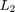
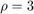

Modeling LFT LPV Systems
Contents
Introduction
A key component of the LFT-based LPVTools infrastructure is the core LFT data structure object, referred to as a tvreal (denoting a time-varying parameter). The tvreal object is used to create a time-varying, real valued scalar object. The tvreal has a range, denoting the maximum and minimum value that the time-varying scalar can assume, and a rate-bound denoting the maximum and minimum rate of change of the time-varying scalar. The tvreal is used to model individual time-varying parameters, and construct parameter dependent LFT matrices and systems. LPVTools represents LFT-based parameter varying matrices and state-space systems by plftmat and plftss data objects, respectively. The plftmat, and plftss objects are constructed using tvreal elements, using a syntax that is a direct parallel to the ureal syntax that is used to define umat and uss objects in the Robust Control Toolbox.
Example of LFT construction
We will design a LFT-based LPV controller for the system :
LFT-based LPV models are restricted to systems with rational parameter dependence, which the system in Equation (1) satisfies. Hence we can construct as a LFT-based LPV system using a tvreal. The first argument of tvreal is the name of the parameter, the second argument is the range of the parameter, and the third argment is the range for the parameter's rate of variation. Lets model for and .
% Define a time-varying real parameter. rho = tvreal('rho',[1 10],[-1 1]); % Construct a parameter varying LFT state-space systems: P = ss(-rho,rho,1,0)
Continuous-time PLFTSS with 1 outputs, 1 inputs, 1 states. The model consists of the following blocks: rho: Time-varying real, range = [1,10], rate bounds = [-1,1], 1 occurrences
LFT-based LPV Synthesis
We will use the command lpvsyn to synthesize a LFT-based LPV controller for this system. lpvsyn requires that the closed-loop performance objectives be characterized in terms of a weighted interconnection (analogous to performance problems) so we define one using a set of dynamic weights and the command sysic.
The exogenous signal passing through the weight Wd is added to the control signal from the controller. The weight Wu acts on the disturbed control signal going from the control to the plant input. The weight We acts on the error between the reference signal and the plant output.
The Wu weight expresses the requirement that the control signal should be less than 10 up to 1 rad/s, roll off and cross over at 10 rad/s, and be less than 0.1 above 100 rad/s. The We weight expresses the requirement that the tracking error be less than 0.2 at frequencies below 1 rad/s, it can then increase, and must be less than 1 at 5 rad/s, and less than 5 at frequencies above 25 rad/s. The Wd expresses the fact that the disturbance on the control signal will have magnitude no larger than 0.1.
% Define and plot weights for synthesis problem Wu = tf([10 10],[1 100]); We = tf([1 25],[5 5]); Wd = ss(0.1); bodemag(Wu,'b',We,'r--') legend('Wu','We')
Define a weighted interconnection for the synthesis problem
systemnames = 'P Wu We Wd'; inputvar = '[r; d; u]'; outputvar = '[We; Wu; r-P]'; input_to_We = '[r-P]'; input_to_Wu = '[u+Wd]'; input_to_Wd = '[d]'; input_to_P = '[Wu+u]'; Pg = sysic
Continuous-time PLFTSS with 3 outputs, 3 inputs, 3 states. The model consists of the following blocks: rho: Time-varying real, range = [1,10], rate bounds = [-1,1], 1 occurrences
Next we will synthesize a LFT-based LPV controller that minimizes the induced  norm of the weighted interconnection . The first argument of lpvsyn is the weighted interconnection. The second argument is the number of measurments available to the controller. The third argument is the number of control inputs available to the controller:
% Perform LPV design with LFT approach
nmeas = 1;
ncon = 1;
[KbLFT,GAMbLFT,INFObLFT] = lpvsyn(Pg,nmeas,ncon);
The LFT-based controller KbLFT is guarenteed to acheive a induced norm of GAMbLFT:
GAMbLFT
GAMbLFT =
2.1480
There are two important points to note. First, the algorithm implemented in lpvsyn for LFT-based LPV systems (see [1,2,3,4] for details), does not take into account the bounds on the parameter rate-of-variation. Hence, GAMbLFT is a bound on the induced norm when there are no limits to how fast the parameter can change with time. Second, GAMbLFT is only an upper bound on the induced norm achived by KbLFT Hence, for input signals that have induced norms bounded by 1, the induced norm is guarenteed to be no larger than GAMbLFT. for any parameter trajectory such that:
LPV Analysis Incorporating Rate-Bounds
The system does have rate-bounds on the parameter . We will now compute a induced norm achived by KbLFT when these bounds are taken into account. To do this we use the function lpvnorm, which will detect the rate-bounds in the system and incorporate them into the analysis:
% Form weighted interconnection with controller in the loop: IC = lft(Pg,KbLFT); % Compute the induced $L_2$ norm achived by KbLFT Gamma = lpvnorm(IC)
Gamma =
1.7317
Gamma is the upper bound on the induced norm achived by KbLFT. Hence, for input signals that have induced norms bounded by 1, KbLFT is guarenteed to achieve an induced norm that is no greater than Gamma for all permissible parameter trajectories (in this case: and ). We note that the induced norm achived by KbLFT is significantly lower when the rate-bounds on the parameter are taken into account.
Pointwise LTI Analysis of LFT-Based LPV Systems
A LFT-based LPV system can be transformed into a Linear Time-Invariant (LTI) system by holding its parameters at a constant value. Hence, it is possible to apply standard LTI analysis techniques to evaluate the pointwise performance of the LFT-based LPV controller. We will evaluate its performance on a grid of 5 points: ![$\rho \in [1,2,3,4,5]$](LFT_Tutorial_eq11421988862769186366.png) . The syntax to perform pointwise LTI analysis requires the user to pass in a rgrid object that specifies the grid of parameter values that the LFT-based LPV system should be evaluated at. Hence, we define the rgrid object Domain to specify the desired grid points:
. The syntax to perform pointwise LTI analysis requires the user to pass in a rgrid object that specifies the grid of parameter values that the LFT-based LPV system should be evaluated at. Hence, we define the rgrid object Domain to specify the desired grid points:
% Define the grid of parameter values: Domain = rgrid('rho',1:5,[-1 1])
RGRID with the following parameters: rho: Gridded real, 5 points in [1,5], rate bounds [-1,1].
Multiple LTI analysis and simulation functions are overloaded for plftss objects. Lets use them to study the frequency response of the closed-loop system. Start by forming the closed-loop system consisting of the controller and plant, without any of the weights:
% Form closed-loop system without weights: systemnames = 'P KbLFT'; inputvar = '[r; d; u]'; outputvar = '[r-P; KbLFT;P]'; input_to_KbLFT = '[r-P]'; input_to_P = '[KbLFT+d]'; CL = sysic; CL.InputName ={'r','d','u'}; CL.OutputName = {'e','u','y'};
Now plot a Bode plot of the performance requirement, expressed by We and compare it against the closed-loop response from the referene to the error.
bodemag(1/We) hold on bodemag(CL('e','r'),Domain) legend('1/We','Closed-loop: r to e') hold off
The performance requirement is not satisfied at , , and  in the frequency band 1-6 rad/s.
Lets look at the LTI step response from reference to output:
step(CL('y','r'),Domain)
LPV Simulation
The step response is well behaved and has less than 20% steady state tracking error, which satisfies the design specification expressed by We.
The LPV system is time-varying, and LTI analysis does not capture the time-varying nature of the model. We can evaluate the performance of the LFT controller as the parameter varies with time by using time-domain simulation for a particular parameter trajectory. LPVTools provides a set of functions for LPV simulation: lpvlsim, lpvstep, lpvinitial, and lpvimpulse.
Lets look at the step response of the closed-loop system as the parameter traverses the trajectory:
% Define the trajectories of the parameters: t =0:0.01:5; ptraj.time = t; ptraj.rho = 4*sin(0.25*t)+5; % Perform LPV simulation: lpvstep(CL('y','r'),ptraj);
The tracking response is excellent for this particular parameter trajectory, and settles down to a steady state error of approximatly 20%.
References
- A. Packard, "Gain Scheduling via Linear Fractional Transformations," System and Control Letters, 1994.
- P. Apkarian and P. Gahinet, "A Convex Characterization of Gain-Scheduled H-Infinity Controllers," IEEE Transactions on Automatic Control, Vol. 40, No. 5 pp. 853-864, 1995.
- P. Apkarian and P. Gahinet, "Erratum to: A Convex Characterization of Gain-Scheduled H-Infinity Controllers," IEEE Transactions on Automatic Control, 1995.
- P. Gahinet, "Explicit Controller Formulas for LMI-based H-Infinity Synthesis," Automatica, Vol. 32, No. 7, pp. 1007-1014, 1996.